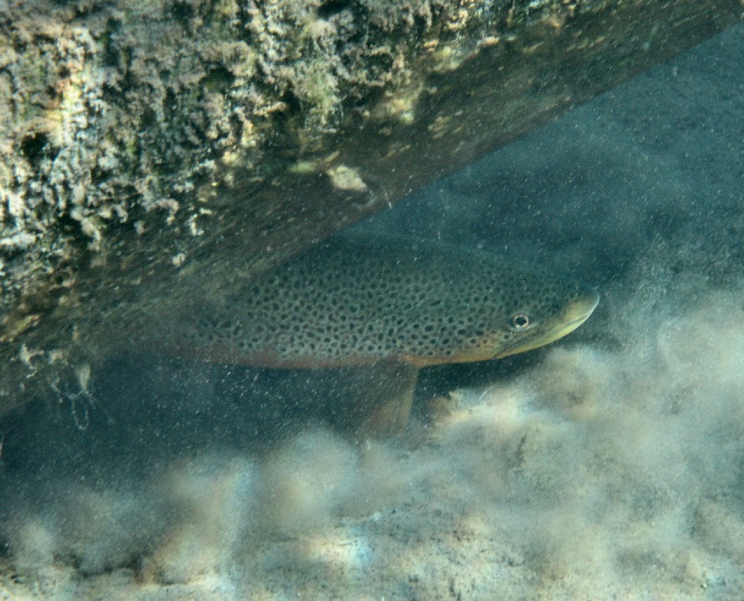

 Young and Hayes (2001) described a study where Brown Trout (Salmo trutta) in several rivers were captured by experienced fly fishers, tagged at the base of the dorsal fin with a colored dart tag, and then observed by divers drifting through the sample area two days later. In this study, 43 trout were marked, 123 fish were observed by the divers, and 16 fish observed by the divers were tagged.
from Derek H. Ogle , created 27-Sep-15, updated 02-Oct-15, Comments/Suggestions.